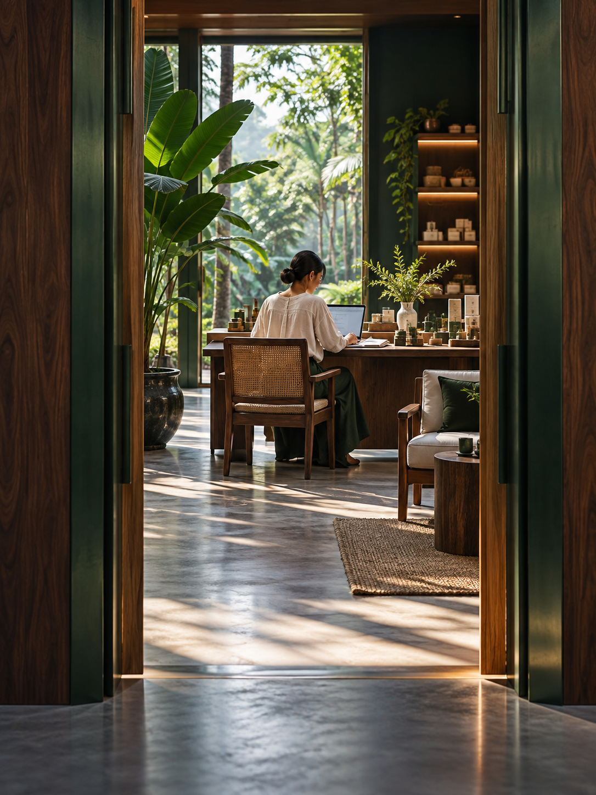

我有生意，
想找到更多顧客
每天忙著營運，還要想內容、回覆詢問、跟進顧客。這條路從你現有的產品與服務出發，學習如何運用 AI 處理重複工作、用內容解答顧客問題，再透過網站與跟進流程承接需求。
我有project 要你幫忙給想讓生意成長，也想開始副業的你
我是 Ken Liang。我分享實際可用的 AI、YouTube 與數位行銷方法，幫你整理方向、找到受眾，把內容接到顧客詢問，一步步建立自己的生意。
選擇我的起點 ↗從你現有的經驗與資源開始，先完成一件有用的事。
選擇起點

每天忙著營運，還要想內容、回覆詢問、跟進顧客。這條路從你現有的產品與服務出發，學習如何運用 AI 處理重複工作、用內容解答顧客問題，再透過網站與跟進流程承接需求。
我有project 要你幫忙我關注的
從你目前最需要解決的問題開始。
從整理資料、發想內容到日常工作流程，學習如何提出清楚的需求、檢查輸出，讓 AI 用在你真正需要的地方。
把你的經驗整理成別人看得懂的內容。從受眾問題、選題與腳本開始，練習清楚表達，累積與潛在顧客的連結。
說清楚你提供什麼、適合誰，以及如何聯絡或了解更多。把內容、頁面與跟進接起來，讓顧客更容易採取行動。
作品選集 / PORTFOLIO
活動報名、品牌介紹與服務頁面。
點選作品，查看完整設計。
學習方式
是內容不知道寫什麼？顧客看不懂你的服務？還是每天有太多重複工作？先把問題講清楚。
可以是一支影片、一個服務介紹頁，或一段 AI 工作流程。把範圍縮到你目前做得到的程度。
觀察別人的回應、顧客的問題，以及實際使用時的困難。讓下一次修改有依據。

關於我
我是 Ken Liang，分享 AI、YouTube、內容行銷、網站與銷售流程的實用方法。
我關心的是：你學完之後，能不能用在自己的工作與生意裡。
我希望把複雜的做法講清楚，讓忙碌的老闆與上班族，能按照自己的條件開始，完成一個成果，再繼續往前。
對我來說，這就是「第二扇門」：為自己多建立一個選擇。
閱讀我的第二扇門 ↗第二扇門 / A SECOND DOOR
不論你正在經營生意，還是在工作之外尋找新的方向，都可以從現有的經驗與資源開始。
我相信學習的價值，在於能不能用在生活、工作與生意裡。先完成一件有用的事，再看結果、調整方向。
做你喜歡、有興趣、感到興奮的事。
從一個讓你想繼續探索的方向開始，把興趣和經驗，慢慢做成自己的作品與選擇。
「第二扇門」，就是讓你看見自己還能往哪裡走。
常見問題
先整理別人常向你請教的問題，以及你工作中累積的技能。從一個你能回答、也有人需要答案的問題開始，探索你可以幫助誰。
你可以先選一個小範圍的任務，例如寫好一支影片的腳本，或整理一頁服務介紹。依自己的時間安排進度，再逐步增加投入。
先看你目前卡在哪裡。重複工作太多，就從 AI 應用開始；需要讓更多人認識你，就從內容開始；已有詢問，但對方不清楚你的服務，就先整理網站與介紹頁。
下一步，由你開始。
選擇你目前的方向，找一個最值得先解決的問題。
選擇我的起點 ↗